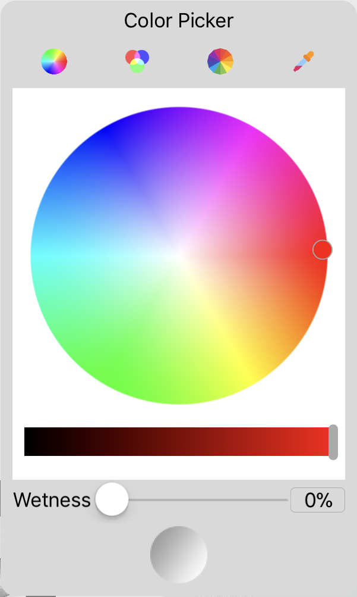
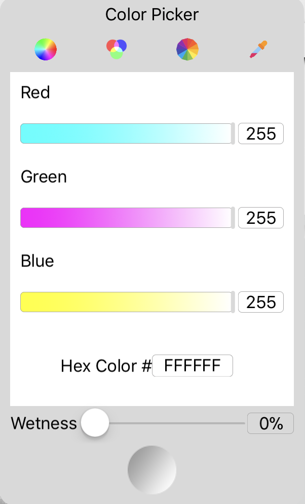
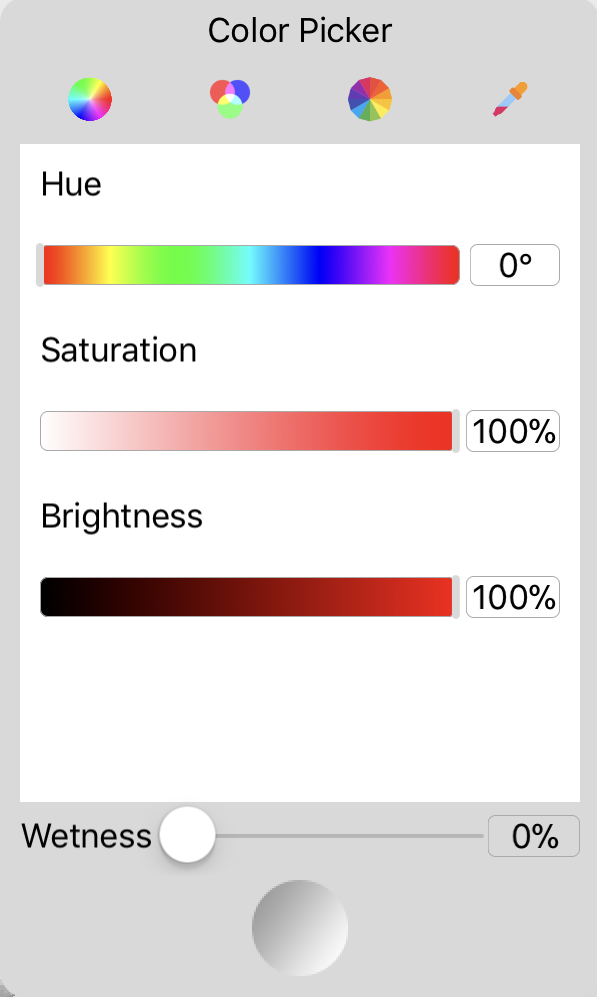
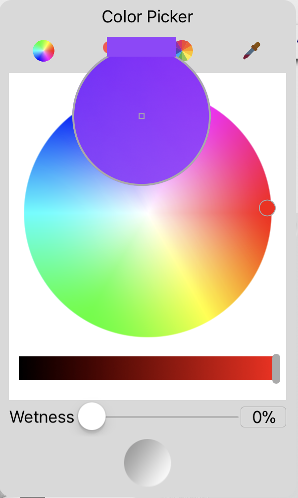

The color picker is a component of color selector, it can provide all kinds of colors.
Color from a color wheel based on HSL (Hue, Saturation and Lightness).

Color from red, green and blue light.

Color from HSB (Hue, Saturation and Brightness).

Color from pixel on screen.
